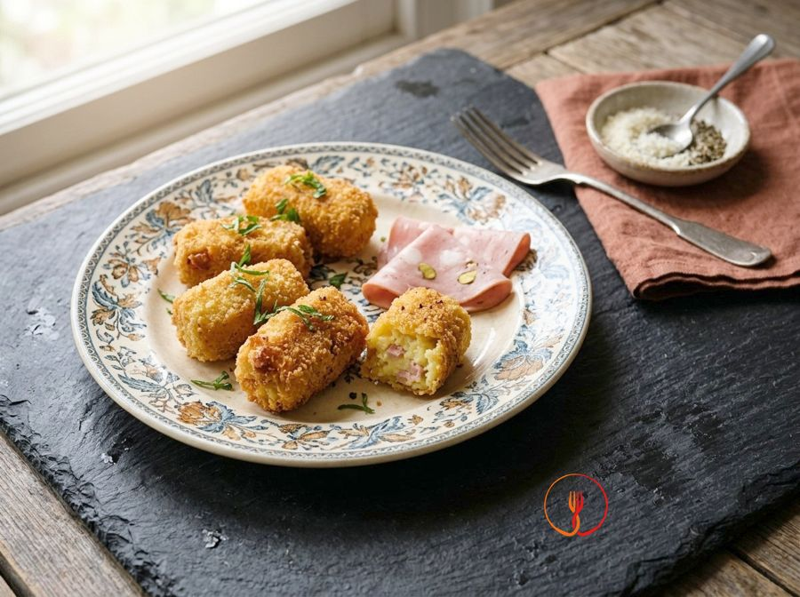

Crocchette di patate e mortadella
Un classico antipasto italiano ma con una spinta in più
Ingredienti
- Mortadella, 1 fetta200 gr
- Patate200 gr
- Tuorli4 n.
- Uova2 n.
- PangrattatoQ.b.
- Parmigiano reggiano100 gr
- Sale finoQ.b.
- Pepe macinatoQ.b.
Allergeni
Nessuno dei 14 allergeni principali tra gli ingredienti.
Procedimento
- Pelate le patate e ponetele in una pentola con acqua fredda. Portate ad ebollizione e controllato ogni tanto se le patate sono cotte.
- Le patate sono pronte quando, infilzandole con una forchetta, non si sente resistenza
- Scolare le patate e attendere che si raffreddino. Con uno schiacciapatate o una forchetta, schiacciare le patate fino ad ottenere un composto omogeneo.
- Tritare la mortadella a coltello, oppure se preferite con un mixer.
- Unite la mortadella e il parmigiano insieme alle patate e impastate.
- In una ciotola sbattete le uova.
- Con il composto, formate delle palline, immergetele nell'uovo e nel pangrattato
- Friggetele in olio ben caldo. Servite subito
Apri la ricetta nell'app per la lista della spesa, le schede ingredienti e i negozi vicini.